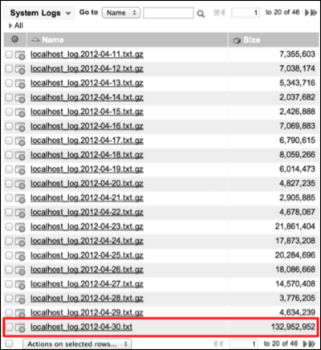

Upgrades Best Practices
Contents
- 1 Upgrades vs Patches
- 2 Upgrades Overview
- 3 Understand the ServiceNow Release Cycle
- 4 About Rollbacks and Backups
- 5 Review Upgrading Phases
- 6 Prepare for Upgrading
- 7 Upgrade and Validate Sub-Production Instances
- 8 Upgrade and Validate a Production Instance
For the latest upgrade documentation, refer to:
1 Upgrades vs Patches
ServiceNow organizes its releases into families. A family is a set of releases that are named after a major city, such as Eureka or Fuji. Within a family, releases are further differentiated by patch and hotfix number. For example, the following releases are both part of the Fuji family:
- Fuji Patch 1
- Fuji Patch 2 Hot Fix 1
Upgrading is the act of moving to a release that is in a different family than your current release. For example, if you move from Eureka Patch 8 to Fuji Patch 2, this is an upgrade because Eureka and Fuji are different families. For details and best practices on upgrading your instances, continue with the following sections in the Upgrades Best Practices.
Patching is the act of moving to a release that is in the same family as your current release. For example, if you move from Fuji Patch 1 to Fuji Patch 2, this is a patch because both versions are part of the Fuji family. For details and best practices on patching your instances, see Patches Best Practices.
Note that in both cases, the target release is Fuji Patch 2. It is the difference between the old and new releases that determines whether you are upgrading or patching.
2 Upgrades Overview
System upgrades can be significant projects. Each ServiceNow release includes major additions and you should always consider the impact of new functionality on an instance. Upgrading implements enhancements to all features that are part of the base system or are already active, unless the feature is customized on your instance.
Careful preparation and knowledge of the available software, tools, and resources can contribute to a successful upgrade. In addition to the materials provided by ServiceNow, it is important to understand how your ServiceNow instance is currently operating, if any errors are present, and the performance level of key business functionality. Set the expectation with IT and business users that time needs to be dedicated to preparing for, implementing, and testing ServiceNow upgrades.
This page provides an upgrade process with best practices for ensuring a safe and effective upgrade. If you have any issues during the upgrade process, please submit an incident to ServiceNow Customer Support.
For additional help with upgrades, ServiceNow offers the Configuration Review service. The service specifically addresses challenges with instance upgradability, manageability, scalability, and performance. Performed by a ServiceNow certified professional consultant, the ServiceNow Configuration Review provides recommendations to align customer configurations with ServiceNow best practices. Contact your ServiceNow sales representative for more details.
3 Understand the ServiceNow Release Cycle
It is important to understand the ServiceNow release cycle and the types of releases available. Knowledge of the release cycle helps ensure that the appropriate upgrades and versions are applied to your instance without compromising system functionality, availability, or performance. For more information, see Upgrades and the Release Cycle.
4 About Rollbacks and Backups
When planning an upgrade, note that ServiceNow does not provide a rollback option or perform on-demand backups. Instances are automatically backed up daily during non-peak business hours on schedules defined by ServiceNow. We do not adjust the timing of existing backup schedules.
Avoid restoring a production instance from backup, when possible, due to downtime and data loss. Restoring a production instance from backup is a final option when a problem cannot be solved using other methods. We provide customer support 24/7 to provide assistance with critical post-upgrade issues.
The best method for successfully upgrading a production instance is to first test thoroughly on a sub-production instance. The testing process explained on this wiki page helps identify critical problems and related fixes on the sub-production instance. Use the information identified during testing to create a plan for addressing issues after upgrading the production instance.
5 Review Upgrading Phases
The upgrading process consists of three major phases. Each phase builds on the the previous one to methodically move the new code to the production instance without compromising system stability.
{kind=link}
6 Prepare for Upgrading
Download the ServiceNow Upgrade Planning Checklist.
6.1 Determine Current Release Version
System administrators can check which release is running on an instance at any time.
- Navigate to System Diagnostics > Stats > Stats.
- Locate the Build name, Build date, and Build tag.
- Match the build name to the release name in the release notes.
- Match the build date and tag to the build date and tag in the release notes.
{kind=link}
6.2 Review Release Notes
ServiceNow provides release notes for every release. The release notes offer valuable information about new functionality, notable changes, and fixes available in a particular version. Read the release notes to determine whether an upgrade contains functionality you need and fixes that resolve any issues affecting your instance. The release notes can also help you determine whether items you previously customized are being upgraded
If your instance is more than one release behind, you can still upgrade directly. ServiceNow fully supports the current and two previous family releases, as well as any interim hotfixes and patch releases.
For more information about releases, see Upgrades and the Release Cycle.
6.3 Create System Benchmarks
After deciding which release you should upgrade to, analyze the current operating environment before performing the upgrade. Specifically, review the following:
- Key functionality
- Integrations
- Instance performance
Assign a consistent core team of power users and key stakeholders to validate important functionality in the ServiceNow instance before and after upgrades.
Pre-upgrade instance validation can provide a reliable benchmark of the current operating environment and alert you to any issues that may appear after the upgrade. For example, in some cases, it appears that specific functionality is broken by an upgrade. Analysis sometimes shows that the functionality did not work properly in the production instance, even before the upgrade.
6.4 Create Comprehensive Test Plans
Create a comprehensive test plan that includes test cases for all core instance functionality and integrations. Perform the tests before and after upgrading. To test efficiently, create a set of detailed test scripts that your testing team can use consistently and methodically to evaluate system functionality.
After upgrading, track any defects or deviations from the pre-upgrade testing results. Defect tracking can help identify root causes and create fixes. When a fix is identified, capture the fix in a single update set. The resulting update sets hold the cumulative fixes that should be applied to the production instance.
If you have CreateNow, use ServiceNow to manage ServiceNow. Create an application in your instance for developing test cases, tracking defects, and reporting upgrade compatibility.
| Click the plus to see more information about managing test cases | ||||||||||||||||||||||
|---|---|---|---|---|---|---|---|---|---|---|---|---|---|---|---|---|---|---|---|---|---|---|
|
To manage an instance upgrade, consider using a spreadsheet with the following columns to track all required test cases.
|
| Click the plus to see more information about tracking defects | ||||||||||||||
|---|---|---|---|---|---|---|---|---|---|---|---|---|---|---|
|
Consider using a spreadsheet with the following columns to track all defects.
Another option is to use the ServiceNow SDLC application to manage defects and stories. |
6.5 Evaluate Log Data
In addition to specific business functionality, general system performance and operating information is also an important benchmark to check before performing an upgrade. Performance and operating information is available in the system logs, which offer an excellent source of information for evaluating the inner workings of a ServiceNow instance. Use this information to help resolve as many errors as possible before the upgrade.
To access the log data, navigate to System Logs > System Log > Errors.
Review the system logs to identify errors and their frequency. Track the total volume of errors to spot any sudden increase that could indicate degraded system performance or failing operations. In the following example, the sys_trigger with the associated sys_id can be examined for root cause.
{kind=link}
When reviewing log files, look at log file size. Excessively large log files, especially those larger than 1 GB, could be an indicator of issues on the instance. Evaluate large log files for frequent errors or other excessive logging that should be fixed.
- .
{kind=link}
6.6 Review Prior Upgrade History
Each upgrade cycle is an opportunity to evaluate prior upgrade history records. The System Diagnostics > Upgrade History module tracks all upgrades applied to an instance. Every record that is examined during an upgrade is tracked and the action taken is listed as the disposition. Use the Upgrade History module to locate and resolve upgrade conflicts. View the most recent upgrade records to see what was skipped, updated, inserted, or deleted. Note objects that were skipped so you can manage customizations efficiently.
{kind=link}
6.7 Manage Customizations
If viewing the upgrade history shows that a base system object was skipped during the previous upgrade, determine if you want to revert the object back to base system status so it is upgraded automatically in the future. For more information, see Reverting Customizations.
When an object is customized, a corresponding record is added in the Customer Update [sys_update_xml] table. The table maintains the current version information for all objects that have been modified. To prevent customizations from being overwritten by system upgrades, the upgrade process automatically skips changes to objects that have a current version in the Customer Update table. For more information about the Customer Update table and how customizations are tracked, see Update Sets Tables.
To determine the base system objects that were skipped in a specific upgrade:
- Navigate to System Diagnostics > Upgrade History.
- In the From column, select an upgrade.
- To make it easier to identify an upgrade, filter n/a out of the From column.
- Under Upgrade Details, click the gear icon (
 ).
). - Add the Created by column to the Selected list.
- Click OK.
- Filter the Disposition column to show Skipped.
- Filter the Created by column to show system.
Consider allowing the upgrade to overwrite a customization if the upgrade contains a desirable enhancement to a feature that you already customized.
| |
Note: There are two methods of restoring a customization after an upgrade. If you saved the customization in an update set, you can restore it after the upgrade by reapplying the update set. Alternatively, you can recreate the customization manually. |
To prevent customizations from being overwritten by system upgrades, the upgrade process automatically skips changes to these objects. You may want to overwrite your customizations with the next software version. For example, you may change a script to implement a temporary workaround for a problem that is fixed in the next version. You would want to overwrite your workaround when upgrading to the next version to ensure that you receive any future enhancements to the script.
To allow an upgrade to overwrite a customization:
- Open the customized object (for example, the ArrayUtil script include).
- Right-click the header and select Show Latest Update.
- Alternatively, right-click the header and select Show Application File.
- the form to add the Replace on upgrade field, if necessary.
- Select Replace on upgrade.
- Click Update.
- The customized object will be replaced on the next upgrade.
6.8 Review Scheduled Jobs for Upgrading
| How to Schedule an Upgrade |
|---|
In the system scheduler, the Upgrade and Check Upgrade Script scheduled jobs execute the upgrade process across all nodes of an instance. It is imperative that you verify that the two scheduled jobs are set properly for upgrading.
- Upgrade: runs every 60 minutes to check if there is a new .war file associated with the instance. A new .war file is associated with the instance record after you submit an upgrade request. If the Upgrade scheduled job finds a new .war file associated with an instance, it downloads and unpacks the .war file, and then restarts the active node.
- Check Upgrade Script: runs automatically when a node is restarted. If the Check Upgrade Script job finds a new and unpacked .war file, it processes the file and begins updating the database.
{kind=link}
To determine when the Upgrade scheduled job runs:
- Navigate to System Scheduler > Scheduled Jobs > Scheduled Jobs.
- In the list, find the Upgrade scheduled job.
- View the Next action column to determine when the job next runs.
- For example, if the next action is 11:10:00, the scheduled job will run at 11:10:00 and then at 10 minutes past the hour every hour (because the scheduled job is set to run every 60 minutes).
To verify that the Upgrade scheduled job is set properly for upgrading:
- Navigate to System Scheduler > Scheduled Jobs > Scheduled Jobs.
- Open Upgrade.
- Check that the Trigger type is set to Interval.
- Check that the System ID field is set to None.
To verify that the Check Upgrade Script scheduled job is set properly for upgrading:
- Navigate to System Scheduler > Scheduled Jobs > Scheduled Jobs.
- Open Check Upgrade Script.
- Check that the Trigger type is set to Run at System Startup.
6.8.1 Other scheduled jobs
During the upgrade process, the system only runs scheduled jobs that are set as Upgrade safe. All other scheduled jobs are paused until the upgrade is complete.
6.9 Create an Implementation Plan
Create an implementation plan that includes all upgrade steps in the correct sequence for your instances. The high-level steps in your implementation plan could be based on the steps listed in this best practices page.
Document all unique and individual steps. For each step, include the following information:
- Date and time the step should take place.
- Date and time the step actually took place.
- Individual or team responsible for completing the step.
- Current step status.
- Any details about the step that would be helpful in the future.
Review the implementation plan with all upgrade team members.
7 Upgrade and Validate Sub-Production Instances
Proper preparation and testing on sub-production instances can help ensure an accurate and successful upgrade on your production instance.
7.1 Clone Production over Sub-Production
To perform accurate tests, clone your production instance over sub-production environments such as development and test. Because the production instance is the final destination for any new ServiceNow release, it is important that testing be done on a system that reflects the production instance as closely as possible.
The System Clone application automates much of the process and enables users with the admin or clone_admin role to clone data from one instance to another.
| |
Note: Users should perform a full clone by clearing the Exclude Audit and Log Data and Exclude Large Attachment data checkboxes when performing a clone from prod to subprod to do upgrade testing. |
{kind=link}
7.2 Tips for Upgrading Sub-Production Instances
Information for upgrading a sub-production instance:
- When upgrading a sub-production instance, do not modify a base system record to experiment. Once a record is modified, reverting to base system functionality is a manual process. This activity should only be done on a sandbox instance.
- When upgrading a sub-production instance, avoid modifying records that are global, such as global UI actions, UI pages, UI macros, and script includes.
- If a record is modified during the upgrade of a sub-production instance, comment all changes and clearly state why the record was modified. This information can help determine if the record should be reverted at a later date.
7.3 Request an Upgrade for Sub-Production Instances
Request an upgrade using the ServiceNow Customer Support system named HI at hi.service-now.com. For more information, see Requesting an Upgrade.
When requesting an upgrade, set the upgrade to start 10-15 minutes before the Upgrade scheduled job runs, which is every 60 minutes. This allows the upgrade request to update HI before the Upgrade scheduled job runs. For information about how to determine when the Upgrade scheduled job runs, see Review Scheduled Jobs for Upgrading.
The size of the company database determines how long the upgrade process takes to complete. The amount of time it takes to upgrade a sub-production instance that is a clone of your production instance is a good indicator for how long it will take to upgrade your production instance.
7.4 Validate Sub-Production Instance Upgrade
To view the status of the current upgrade, use the Upgrade Monitor application. The Upgrade Monitor can be used when the upgrade state is Complete, Running, or Failed.
You can also use the Upgrade History module to first confirm that the upgrade is in progress and then confirm that the process completed. Upgrade History shows the Upgrade started and the Upgrade finished times. If the Upgrade started column contains information, but the Upgrade finished column is blank, the upgrade is still in progress.
{kind=link}
After the upgrade process finishes, perform the following steps to validate the sub-production instance:
- Immediately after the upgrade is applied, use the Upgrade History module to understand the changes made to the instance. View the upgrade record to determine what was modified and where the changes were made. Upgrade History also lists updates that were skipped because of customizations on your instance.
- Work with the testing team to run all test cases against the newly upgraded sub-production instance. Closely compare the test results to the data gathered during the pre-upgrade testing. Any defects or deviations from previous test runs should be confirmed and analyzed. When a fix is created for any deviations or errors that occurred in the upgrade process, capture each fix in a single update set. The resulting update sets hold the cumulative fixes that should be applied to the production instance.
Use a simple and descriptive naming convention for all update sets. It can be useful to name update sets based on project tasks or user stories. In the update set naming scheme, consider using some combination of these items: project name, task name, user story name, date, version, revision, and patch number. For example, Upgrade Remediation – 03/15/13 – for Eureka Patch 1. Be sure to add a detailed description of the update set contents to the update set record.
If you find issues during the testing process, submit an incident to ServiceNow Customer Support.
8 Upgrade and Validate a Production Instance
After completing the steps to prepare, test, and resolve issues on sub-production instances, upgrade and validate your production instance.
8.1 Tips for Upgrading a Production Instance
Information for upgrading a production instance:
- Do not clone a sub-production instance over production instead of upgrading. Apply the upgrade and any required update sets directly to the production instance.
- Obtain confirmation from IT and management that all sub-production instance defects have been fixed, validated, and included in an update set.
- Use the change management process established by your organization to track the upgrade.
- Communicate effectively with your user community regarding changes, new features, and process updates resulting from the upgrade.
- Submit the Upgrade Request for a negotiated and suitable time for all users of the ServiceNow system. For example, schedule the upgrade after hours, to minimize impact to your users. Remember to schedule the upgrade to occur 15 – 20 minutes before the Upgrade scheduled job interval.
- Company database size determines upgrade process time. If you upgraded a sub-production instance that was a clone of your production instance, you should have a good indicator for how long it will take to upgrade your production instance.
- Allow time in your change window to run all test cases and validate that all integrations, key business functionality, and system performance are acceptable. Add a time buffer for responding to errors without breaching the change window.
- After the upgrade, conduct a lessons learned meeting. Document improvements and ensure that they are incorporated into the next upgrade cycle.
| Click the plus to see a lessons learned document template |
|---|
|
Following is a sample lessons learned document template: |
{kind=link}
8.2 Request an Upgrade for Production Instance
Request an upgrade using the ServiceNow Customer Support system named HI at hi.service-now.com. For more information, see Requesting an Upgrade.
8.3 Configure a Completed Upgrade Notification
To configure an instance to send an email when an upgrade is successfully completed:
- Navigate to System Policy > Email > Notifications.
- Open the System Upgraded notification.
- Select one or more contacts in the Users field.
- Click Update.
The selected users now receive a notification when an upgrade completes successfully.
{kind=link}
8.4 Confirm an Upgrade
| How to Determine Upgrade Status |
|---|
There are several methods of confirming that an instance has been upgraded to a recent feature release:
- Navigate to System Diagnostics > Upgrade Log and locate the message Notifying HI that upgrade has been completed.
- Navigate to System Definition > System Upgrades. Information about all system upgrades is listed.
- Navigate to System Diagnostics > Upgrade History and search for the most recent upgrade.